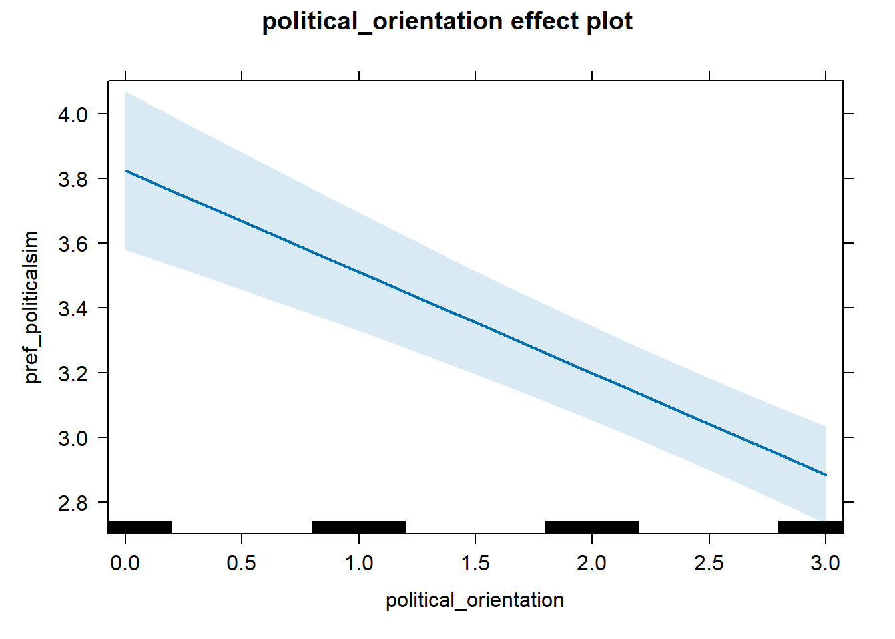

## Lade nötiges Paket: lme4## Lade nötiges Paket: Matrix##
## Attache Paket: 'lmerTest'## Das folgende Objekt ist maskiert 'package:lme4':
##
## lmer## Das folgende Objekt ist maskiert 'package:stats':
##
## step## Lade nötiges Paket: carData## lattice theme set by effectsTheme()
## See ?effectsTheme for details.## ── Attaching core tidyverse packages ──────────────────────── tidyverse 2.0.0 ──
## ✔ dplyr 1.1.4 ✔ readr 2.1.5
## ✔ forcats 1.0.0 ✔ stringr 1.5.1
## ✔ ggplot2 3.5.1 ✔ tibble 3.2.1
## ✔ lubridate 1.9.4 ✔ tidyr 1.3.1
## ✔ purrr 1.0.2## ── Conflicts ────────────────────────────────────────── tidyverse_conflicts() ──
## ✖ tidyr::expand() masks Matrix::expand()
## ✖ dplyr::filter() masks stats::filter()
## ✖ dplyr::lag() masks stats::lag()
## ✖ tidyr::pack() masks Matrix::pack()
## ✖ tidyr::unpack() masks Matrix::unpack()
## ℹ Use the conflicted package (<http://conflicted.r-lib.org/>) to force all conflicts to become errors## Lade nötiges Paket: nlme
##
## Attache Paket: 'nlme'
##
## Das folgende Objekt ist maskiert 'package:dplyr':
##
## collapse
##
## Das folgende Objekt ist maskiert 'package:lme4':
##
## lmList
##
## This is mgcv 1.9-1. For overview type 'help("mgcv-package")'.library(stringr) #To process strings in the function
library(sandwich) #For robust standard errors
library(lmtest) #To run linear tests## Lade nötiges Paket: zoo
##
## Attache Paket: 'zoo'
##
## Die folgenden Objekte sind maskiert von 'package:base':
##
## as.Date, as.Date.numeric#OUTLINE
#Function 1 - rp(p) Reformat p-value for printing on chart
#Function 2 - eval2() Reads a variable name and assigns the values to another variable (useful for processing formulas and creating temporary variables)
#Function 3 - reg2() Interrupted regression with entered formula plus cutoff point
#Function 4 - twolines() Run two-lines test, relying on functions 1 and 2 as well
################################################################################
#Function 1 - rp(p) Reformat p-value for printing on chart
rp=function(p) if (p<.0001) return("p<.0001") else return(paste0("p=", sub("^(-?)0.", "\\1.", sprintf("%.4f", p))))
#Function 2 - eval2() evaluate a string as a function
eval2=function(string) eval(parse(text=string)) #Function that evaluates a variable"
#if x.f="x1", then x=eval2(x.f) will populate x with the values of x1
#Function 3 - two-line regression with glm() so that it has heteroskedastic robust standard errors
reg2=function(f,xc,graph=1,family="gaussian")
{
#Syntax:
#f: formula as in y~x1+x2+x3
#The first predictor is the one the u-shape is tested on
#xc: where to set the breakpoint, a number
#link:
# Gaussian for OLS
# binomial for probit
#(1) Extract variable names from formula
#1.1 Get the formulas
y.f=all.vars(f)[1] #DV
x.f=all.vars(f)[2] #Variable on which the u-shape shall be tested
#Number of variables
var.count=length(all.vars(f)) #How many total variables, including y and x
#Entire model, except the first predictor
if (var.count>2) nox.f=drop.terms(terms(f),dropx=1,keep.response = T)
#1.2 Grab the two key variables to be used, xu and yu
xu=eval2(x.f) #xu is the key predictor predicted to be u-shaped
yu=eval2(y.f) #yu is the dv
#1.3 Replace formula for key predictor so that it accommodates possibly discrete values, gam() breaks down if x has few possible values unless one restricts it, done automatically
#1.3.1 Count number of unique x values
unique.x=length(unique(xu)) #How many unique values x has
#1.3.2 New function segment for x
sx.f=paste0("s(",x.f,",bs='cr', k=min(10,",unique.x,"))" )
#1.4 xc is included in the first line
xlow1 =ifelse(xu<=xc,xu-xc,0) #xlow=x-xc when x<xc, 0 otherwise
xhigh1=ifelse(xu>xc,xu-xc,0) #xhigh=x when x<xmax, 0 otherwise
high1 =ifelse(xu>xc,1,0) #high dummy, allows interruption
#1.5 Now include xc in second line
xlow2=ifelse(xu<xc,xu-xc,0)
xhigh2=ifelse(xu>=xc,xu-xc,0)
high2=ifelse(xu>=xc,1,0)
#(2) Run interrupted regressions
#2.1 Generate formulas replacing the single predictor x, with the 3 new variables
#If there were covariates, grab them an copy-paste them after the 3 new variables
if (var.count>2)
{
glm1.f=update(nox.f,~ xlow1+xhigh1+high1+.) #update takes a formula and adds elements to it, by putting the . at the end, it will paste the existing variables after the new 3 variables
glm2.f=update(nox.f,~ xlow2+xhigh2+high2+.)
}
#If there were no covariates, just run the 3 variable model
if (var.count==2)
{
glm1.f=as.formula("yu~ xlow1+xhigh1+high1")
glm2.f=as.formula("yu~ xlow2+xhigh2+high2")
}
#2.2 Run them
glm1=glm(as.formula(format(glm1.f)),family=family)
glm2=glm(as.formula(format(glm2.f)),family=family)
#2.3 Compute robust standard errors
rob1=coeftest(glm1, vcov=vcovHC(glm1,"HC3")) #Until 2018 03 20 I was using HC3, but they sometimes generate errors, so i switched it to HC1
rob2=coeftest(glm2, vcov=vcovHC(glm2,"HC3"))
#Sometimes HC3 gives NA values (for very sparse or extreme data), check and if that's the case change method
msg=""
if (is.na(rob1[2,4]))
{
rob1=coeftest(glm1, vcov=vcovHC(glm1,"HC1"))
msg=paste0(msg,"\nFor line 1 the heteroskedastic standard errors HC3 resulted in an error thus we used HC1 instead.")
}
if (is.na(rob2[2,4]))
{
rob2=coeftest(glm2, vcov=vcovHC(glm2,"HC1"))
msg=paste0(msg,"\nFor line 2 the heteroskedastic standard errors HC3 resulted in an error thus we used HC1 instead.")
}
#2.4 Slopes
b1=as.numeric(rob1[2,1])
b2=as.numeric(rob2[3,1])
#2.5 Test statistics, z-values
z1=as.numeric(rob1[2,3])
z2=as.numeric(rob2[3,3])
#2.6 p-values
p1=as.numeric(rob1[2,4])
p2=as.numeric(rob2[3,4])
#3) Is the u-shape significant?
u.sig =ifelse(b1*b2<0 & p1<.05 & p2<.05,1,0)
#4) Plot results
if (graph==1) {
#4.1 General colors and parameters
pch.dot=1 #Dot for scatterplot (data)
#col.l1='blue2' #Color of straight line 1
col.l1='dodgerblue3'
col.l2='firebrick' #Color of straight line 2
col.fit='gray50' #Color of fitted smooth line
col.div="green3" #Color of vertical line
lty.l1=1 #Type of line 1
lty.l2=1 #Type of line 2
lty.fit=2 #Type of smoothed line
#4.2) Estimate smoother
if (var.count>2)
{
gam.f=paste0(format(nox.f),"+",sx.f) #add the modified smoother version of x into the formula
gams=gam(as.formula(gam.f),link=link) #now actually run the smoother
}
if (var.count==2)
{
gams=gam(as.formula(paste0("yu~",sx.f)),link=link) #now actually run the smoother
}
#Get dots of raw data
#4.3) If no covariates, there are two variables, and y.dots is the y values
if (var.count==2) yobs=yu
#4.4) If covariates present, yobs is the fitted value with u(x) at mean, need new.data() with variables at means
if (var.count>2) {
#4.4.1) Put observed data into matrix
data.obs=as.data.frame(matrix(nrow=length(xu),ncol=var.count))
colnames(data.obs)=all.vars(f)
#4.4.2 Populate the dataset with the observed variables
for (i in 1:(var.count)) data.obs[,i]=eval(as.name(all.vars(f)[i]))
#4.4.3) Drop observations with missing values on any of the variables
data.obs=na.omit(data.obs)
#4.4.4) Create data where u(x) is at sample means to get residuals based on rest of models to act as yobs
#Recall: columns 1 & 2 have y and u(x) in obs.data
data.xufixed =data.obs
data.xufixed[,2]=mean(data.obs[,2]) #Note, the 1st predictor, 2nd columns, is always the one hypothesized to be u-shaped
#replace it with the mean value of the predictor
#5.4.5) Create data where u(x) is obs, and all else at sample means
data.otherfixed = data.obs #start with original value
#Replace all RHS with mean, except the u(x)
#for (i in 3:var.count) data.otherfixed[,i]=mean(data.obs[,i]) #changed on 2018 11 23 to allow having factors() as predictors, their "midpoint" value is used, sometimes that value is more meaningfully a median point than others
for (i in 3:var.count) { #loop over covariates
xt=sort(data.obs[,i]) #create auxiliary variable that has those values sorted
n=length(xt) #see how many observations there are
xm=xt[round(n/2,0)] #take the midpoint value (this will work with ordinal and factor data, but with factor it can be arbitrary)
data.otherfixed[,i]=xm #Replace with that value in the dataset used for fitted value
}
#4.4.6) Get yobs with covariates
#First the fitted value
yhat.xufixed=predict.gam(gams,newdata = data.xufixed)
#Substract fitted value from observed y, and shift it with constant so that it has same mean as original y
yobs =yu-yhat.xufixed
yobs=yobs+mean(yu)-mean(yobs) #Adjust to have the same mean
} #End if for covariates that requires computes y.obs instead of using real y.
#4.5) First line (x,y) coordinates
# offset1=mean(yobs[xu<=xc])-min(xu)*b1-(xc-min(xu))/2*b1
# x.l1=c(min(xu),xc)
# y.l1=c(min(xu)*b1+offset1,xc*b1+offset1)
#
# #4.6) First line (x,y) coordinates
# offset2=mean(yobs[xu>=xc])-xc*b2-(max(xu)-xc)/2*b2
# x.l2=c(xc,max(xu))
# y.l2=c(xc*b2+offset2,max(xu)*b2+offset2)
#4.7) Get yhat.smooth
#Without covariates, just fit the observed data
if (var.count==2) yhat.smooth=predict.gam(gams)
#With covariates, fit at observed means
if (var.count>2) yhat.smooth=predict.gam(gams,newdata = data.otherfixed)
#Substract fitted value from observed y
offset3 = mean(yobs-yhat.smooth)
yhat.smooth=yhat.smooth+offset3
#4.8) Coordinates for top and bottom end of chart
y1 =max(yobs,yhat.smooth) #highest point
y0 =min(yobs,yhat.smooth) #lowest point
yr =y1-y0 #range
y0 =y0-.3*yr #new lowest. 30% lower
#xs
x1 =max(xu)
x0 =min(xu)
xr =x1-x0
#4.9) Plot
#4.9.1) Figure out coordinates for arrows so that they fit
par(mar=c(5.4,4.1,.5,2.1))
plot(xu[xu<xc],yobs[xu<xc],cex=.75,col=col.l1,pch=pch.dot,las=1,
ylim=c(y0,y1),
xlim=c(min(xu),max(xu)),
xlab="",
ylab="") #Range of y has extra 30% to add labels
points(xu[xu>xc],yobs[xu>xc],cex=.75, col=col.l2)
#Axis labels
mtext(side=1,line=2.75,x.f,font=2)
mtext(side=2,line=2.75,y.f,font=2)
#4.10) Smoothed line
#lines(xu[order(xu)],yhat.smooth[order(xu)],col=col.fit,lwd=2,lty=lty.fit)
#4.10 - New 2018 05 25
lines(xu[order(xu)],yhat.smooth[order(xu)],col=col.fit,lty=2,lwd=2)
#4.10.2 Arrow 1
xm1=(xc+x0)/2
x0.arrow.1=xm1-.1*xr
x1.arrow.1=xm1+.1*xr
y0.arrow.1=y0+.1*yr
y1.arrow.1=y0+.1*yr+ b1*(x1.arrow.1-x0.arrow.1)
#Move arrow if it is too short
if (x0.arrow.1<x0+.1*xr) x0.arrow.1=x0
#Move arrow if it covers text
gap.1=(min(y0.arrow.1,y1.arrow.1)-(y0+.1*yr))
if (gap.1<0) {
y0.arrow.1=y0.arrow.1-gap.1
y1.arrow.1=y1.arrow.1-gap.1
}
arrows(x0=x0.arrow.1,x1=x1.arrow.1,y0=y0.arrow.1,y1=y1.arrow.1,col=col.l1,lwd=2)
#4.10.3 Text under arrow 1
xm1=max(xm1,x0+.20*xr)
text(xm1,y0+.025*yr,
paste0("Average slope 1:\nb = ",round(b1,2),", z = ",round(z1,2),", ",rp(p1)),col=col.l1)
#4.10.3 Arrow 2
x0.arrow.2=xc+(x1-xc)/2-.1*xr
x1.arrow.2=xc+(x1-xc)/2+.1*xr
y0.arrow.2=y1.arrow.1
y1.arrow.2=y0.arrow.2 + b2*(x1.arrow.2-x0.arrow.2)
gap.2=(min(y0.arrow.2,y1.arrow.2)-(y0+.1*yr))
if (gap.2<0) {
y0.arrow.2=y0.arrow.2-gap.2
y1.arrow.2=y1.arrow.2-gap.2
}
#Shorten arrow if it is too close to the end
x1.arrow.2=min(x1.arrow.2,x1)
if (x0.arrow.2<xc) x0.arrow.2=xc
xm2=xc+(x1-xc)/2
xm2=min(xm2,x1-.2*xr)
arrows(x0=x0.arrow.2,x1=x1.arrow.2,y0=y0.arrow.2,y1=y1.arrow.2,col=col.l2,lwd=2)
text(xm2,y0+.025*yr,
paste0("Average slope 2:\nb = ",round(b2,2),", z = ",round(z2,2),", ",rp(p2)),col=col.l2)
#4.13 Division line
lines(c(xc,xc),c(y0+.35*yr,y1),col=col.div,lty=lty.fit)
text(xc,y0+.3*yr,round(xc,2),col=col.div)
}#End: if graph==1
#5 list with results
res=list(b1=b1,p1=p1,b2=b2,p2=p2,u.sig=u.sig,xc=xc,z1=z1,z2=z2,
glm1=glm1,glm2=glm2,rob1=rob1,rob2=rob2,msg=msg) #Output list with all those parameters, betas, z-values, p-values and significance for u
if (graph==1) res$yhat.smooth=yhat.smooth
#output it
res
} #End of reg2() function
#Function 4-
twolines=function(f,graph=1,link="gaussian",data=NULL,pngfile="") {
attach(data)
#(1) Extract variable names
#1.1 Get the formulas
y.f=all.vars(f)[1] #DV
x.f=all.vars(f)[2] #Variable on which the u-shape shall be tested
#Number of variables
var.count=length(all.vars(f)) #How many predictors in addition to the key predictor?
#Entire model, except the first predictor
if (var.count>2) nox.f=drop.terms(terms(f),dropx=1,keep.response = T)
#1.1.5 Drop missing value for any the variables being used
#all variables in the regression
vars=all.vars(f)
#Vector with columns associated with those variable names inthe uploaded dataset
cols=c()
for (var in vars) cols=c(cols, which(names(data)==var))
#Set of complete observations
full.rows=complete.cases(data[,cols])
#Drop missing rows
data=data[full.rows,]
detach(data) #Detach the full dataset
attach(data) #Attach the one without missing values in key variables
#1.2 Grab the two key variables to be used, xu and yu
xu=eval2(x.f) #xu is the key predictor predicted to be u-shaped
yu=eval2(y.f) #yu is the dv
#1.3 Replace formula for key predictor so that it accommodates possibly discrete values
#1.3.1 Count number of unique x values
unique.x=length(unique(xu)) #How many unique values x has
#1.3.2 New function segment for x
sx.f=paste0("s(",x.f,",bs='cr', k=min(10,",unique.x,"))" )
#2 Run smoother
#2.1 Define the formula to be run based on whether there are covariates
if (var.count>2) gam.f=paste0(format(nox.f),"+",sx.f) #with covariates
if (var.count==2) gam.f=paste0("yu~",sx.f) #without
#2.2 Now run it
gams=gam(as.formula(gam.f),link=link) #so this is a general additive model with the main specification entered
#but we make the first predictor, the one that will be tested for having a u-shaped effect
#be estimated with a completely flexible functional form.
#(3) Generate yobs (dots)
#3.1 If no covariates, yobs is the actually observed data
if (var.count==2) yobs=yu
#3.2 If covariates present, yobs is the fitted value with u(x) at mean, need new.data() with variables at means
if (var.count>2) {
#3.3 Put observed data into matrix
data.obs=as.data.frame(matrix(nrow=length(xu),ncol=var.count)) #Empty datafile
colnames(data.obs)=all.vars(f) #Name variables
for (i in 1:(var.count)) data.obs[,i]=eval(as.name(all.vars(f)[i])) #fill in data
#3.4 Drop observations with missing values on any of the variables
data.obs=na.omit(data.obs)
#3.5 Create data where xu is at sample means to get residuals based on rest of models to act as yobs
#Recall: columns 1 & 2 have y and u(x) in obs.data
data.xufixed =data.obs
data.xufixed[,2]=mean(data.obs[,2]) #Note, the 1st predictor, 2nd columns, is always the one hypothesized to be u-shaped
#replace it with the mean value of the predictor
#3.6 Get yobs with covariates
#First the fitted value
##add the modified smoother version of x into the formula
yhat.xufixed=predict.gam(gams,newdata = data.xufixed) #get fitted values at means for covariates
#3.7 Substract fitted value from observed y
yobs = yu-yhat.xufixed
#3.8 Create data where u(x) is obs, and all else at sample means
data.otherfixed = data.obs #start with original value
#3.9 Replace all covariates with their mean for fitting data at sample means
for (i in 3:var.count) data.otherfixed[,i]=mean(data.obs[,i])
} #End if covariates are present to compute yobs
#4) Get the fitted values at sample means for covariates
#4.1) Get predicted values into list
if (var.count>2) g.fit=predict.gam(gams,newdata = data.otherfixed,se.fit=TRUE) #predict with covariates at means
if (var.count==2) g.fit=predict.gam(gams,se.fit=TRUE)
#4.2) Take out the fitted itself
y.hat=g.fit$fit
#4.3) Now the SE
y.se =g.fit$se.fit
#5) Most extreme fitted value
#5.1) Determine if function is at first decreasing (potential u-shape) vs. increaseing (potentially inverted U) (potential u-shape) orinverted u shaped using quadratic regression
#to know if we are looking for max or min
xu2=xu^2 #Square x term, xu is the 1st predictor re-cpded
if (var.count>2) lmq.f=update(nox.f,~xu+xu2+.) #Add to function with covariates (put first, before covariates)
if (var.count==2) lmq.f=yu~xu+xu2 #
lmq=lm(as.formula(format(lmq.f))) #Estimate the quadratic regression
bqs=lmq$coefficients #Get the point estimates
bx1= bqs[2] #point estimate for effect of x
bx2=bqs[3] #point estimate for effect of x^2
x0=min(xu) #lowest x-value
s0=bx1+2*bx2*x0 #estimated slope at the lowest x-value
if (s0>0) shape='inv-ushape' #if the quadratic is increasing at the lowest point, the could be inverted u-shape
if (s0<=0) shape='ushape' #if it is decreaseing, then it could be a regular u-shape
#5.2 Get the middle 80% of data to avoid an extreme cutoff
x10=quantile(xu,.1)
x90=quantile(xu,.9)
middle=(xu>x10 & xu<x90) #Don't consider extreme values for cutoff
x.middle=xu[middle]
#5.3 Restrict y.hat to middle
y.hat=y.hat[middle]
y.se=y.se[middle]
#5.4 Find upper and lower band
y.ub=y.hat+y.se #+SE is for flat max
y.lb=y.hat-y.se #-SE is for flat min
#5.5 Find most extreme y-hat
if (shape=='inv-ushape') y.most=max(y.hat) #if potentially inverted u-shape, use the highest y-hat as the most extrme
if (shape=='ushape') y.most=min(y.hat) #if potential u-shaped, then the lowest instead
#5.6 x-value associated with the most extreme value
x.most=x.middle[match(y.most, y.hat)]
#5.7 Find flat regions
if (shape=='inv-ushape') flat=(y.ub>y.most)
if (shape=='ushape') flat=(y.lb<y.most)
xflat=x.middle[flat]
#6 RUN TWO LINE REGRESSIONS
#6.1 First an interrupted regression at the midpoint of the flat region
rmid=reg2(f,xc=median(xflat),graph=0) #Two line regression at the median point of flat maximum
#6.2 Get z1 and z2, statistical strength of both lines at the midpoint
z1=abs(rmid$z1)
z2=abs(rmid$z2)
#6.3 Adjust breakpoint based on z1,z2
xc=quantile(xflat,z2/(z1+z2))
#6.4 Regression split based on adjusted based on z1,z2
#Save to png? (option set at the beggining by giving png a name)
if (pngfile!="") png(pngfile, width=2000,height=1500,res=300)
#Run the two lines
res=reg2(as.formula(format(f)),xc=xc,graph=graph)
#Save to png? (close)
if (pngfile!="") dev.off()
#7 Add other results obtained before to the output (some of these are read by the server and included in the app)
res$yobs = yobs
res$y.hat = y.hat
res$y.ub = y.ub
res$y.lb = y.lb
res$y.most = y.most
res$x.most = x.most
res$f = format(f)
res$bx1 = bx1 #linear effect in quadratic regression
res$bx2 = bx2 #quadratic
res$minx = min(xu) #lowest x value
res$midflat = median(xflat)
res$midz1 = abs(rmid$z1)
res$midz2 = abs(rmid$z2)
on.exit(detach(data))
res
} #End functionmodel_pref_politicalsim_1 = lmer(pref_politicalsim ~ political_orientation +
(1+political_orientation|country),
data = data_included_documented %>%
dplyr::filter(political_orientation <= breaking_point))
summary(model_pref_politicalsim_1)## Linear mixed model fit by REML. t-tests use Satterthwaite's method [
## lmerModLmerTest]
## Formula:
## pref_politicalsim ~ political_orientation + (1 + political_orientation |
## country)
## Data: data_included_documented %>% dplyr::filter(political_orientation <=
## breaking_point)
##
## REML criterion at convergence: 42671.1
##
## Scaled residuals:
## Min 1Q Median 3Q Max
## -2.5773 -0.7032 0.1458 0.7426 2.2334
##
## Random effects:
## Groups Name Variance Std.Dev. Corr
## country (Intercept) 0.65523 0.8095
## political_orientation 0.05036 0.2244 -0.75
## Residual 3.18024 1.7833
## Number of obs: 10636, groups: country, 138
##
## Fixed effects:
## Estimate Std. Error df t value Pr(>|t|)
## (Intercept) 3.82478 0.12460 45.48511 30.70 < 2e-16 ***
## political_orientation -0.31341 0.04212 30.17241 -7.44 2.63e-08 ***
## ---
## Signif. codes: 0 '***' 0.001 '**' 0.01 '*' 0.05 '.' 0.1 ' ' 1
##
## Correlation of Fixed Effects:
## (Intr)
## pltcl_rnttn -0.815## # A tibble: 2 × 5
## Parameter Std_Coefficient CI CI_low CI_high
## <chr> <dbl> <dbl> <dbl> <dbl>
## 1 (Intercept) 0 0.997 0 0
## 2 political_orientation -0.170 0.997 -0.237 -0.102
model_pref_politicalsim_2 = lmer(pref_politicalsim ~ political_orientation +
(1+political_orientation|country),
data = data_included_documented %>%
dplyr::filter(political_orientation >= breaking_point))
summary(model_pref_politicalsim_2)## Linear mixed model fit by REML. t-tests use Satterthwaite's method [
## lmerModLmerTest]
## Formula:
## pref_politicalsim ~ political_orientation + (1 + political_orientation |
## country)
## Data: data_included_documented %>% dplyr::filter(political_orientation >=
## breaking_point)
##
## REML criterion at convergence: 29821.8
##
## Scaled residuals:
## Min 1Q Median 3Q Max
## -2.8134 -0.7937 0.1168 0.6892 2.1899
##
## Random effects:
## Groups Name Variance Std.Dev. Corr
## country (Intercept) 0.74838 0.8651
## political_orientation 0.03141 0.1772 -0.81
## Residual 3.31361 1.8203
## Number of obs: 7357, groups: country, 129
##
## Fixed effects:
## Estimate Std. Error df t value Pr(>|t|)
## (Intercept) 1.62535 0.17799 25.66352 9.132 1.53e-09 ***
## political_orientation 0.40821 0.04567 22.90001 8.938 6.31e-09 ***
## ---
## Signif. codes: 0 '***' 0.001 '**' 0.01 '*' 0.05 '.' 0.1 ' ' 1
##
## Correlation of Fixed Effects:
## (Intr)
## pltcl_rnttn -0.911## # A tibble: 2 × 5
## Parameter Std_Coefficient CI CI_low CI_high
## <chr> <dbl> <dbl> <dbl> <dbl>
## 1 (Intercept) 0 0.997 0 0
## 2 political_orientation 0.175 0.997 0.117 0.233